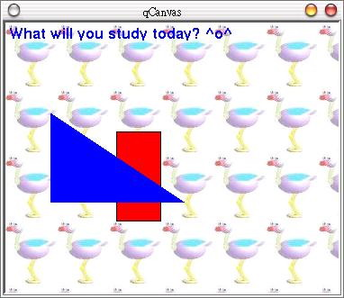

除了使用QPainter相關類別來進行簡單的繪圖之外，我們還可以使用Qt所提供的繪圖模組QCanvas，每一個QCanvas繪圖都是一個物件，可以分別為它們設定位置與深度，也可以設定移動速度，在製作動畫上相當的方便。
在繪圖時，我們準備一個QCanvas物件，它就像是一塊畫布，我們在這塊畫布上畫上QCanvasItem物件，是否顯示一個QCanvasItem物件可以使用show()方法來控制，而觀看繪圖結果時是使用QCanvasView物件。
在程式撰寫上，我們繼承QCanvasView類別，將QCanvas傳遞給它，然後定義每個QCanvasItem繪圖方法；我們將這個QCanvasView類別當作Qt的主Widget，就可以顯示在視窗上。
下面這個程式是個簡單的示範，畫面中的長方形會不斷的往右移動，您可以使用滑鼠將之設定回來，而由於我們設定了深度，所以長方形會一直被三角形所覆蓋：
#include <qapplication.h>
#include <qcanvas.h>
#include <qfont.h>
#include <qimage.h>
class View : public QCanvasView {
public:
View(QCanvas& canvas) : QCanvasView(&canvas){
canvas.setBackgroundPixmap(QPixmap("logo.jpg"));
canvas.resize(370, 300);
setFixedSize(sizeHint());
p = new QCanvasPolygon(&canvas); // 多邊形
QPointArray a;
a.setPoints(3, 50, 100, 200, 200, 50, 200);
p->setPoints(a);
p->setBrush(Qt::blue);
p->setZ(10); // 深度
p->show(); // 顯示繪圖物件
r = new QCanvasRectangle(100, 100, 50, 100, &canvas); // 四方形
r->setVelocity(0.5, 0); // 移動速度
r->setBrush(Qt::red);
r->setZ(10);
r->show();
t = new QCanvasText("What will you study today? ^o^", &canvas); // 文字
t->setFont(QFont("Helvetica", 12, QFont::Bold));
t->setColor(Qt::blue);
t->setZ(20);
t->setTextFlags(AlignBottom);
t->move(5, 20);
t->show();
}
protected:
void contentsMousePressEvent(QMouseEvent *e) {
r->move(e->pos().x(), e->pos().y());
}
private:
QCanvasPolygon *p;
QCanvasRectangle *r;
QCanvasText *t;
};
int main(int argc, char** argv) {
QApplication app(argc, argv);
QCanvas canvas(0, 0);
canvas.setAdvancePeriod(30); // 移動更新間隔:
canvas.setDoubleBuffering(true); // double buffer
View c(canvas);
app.setMainWidget(&c);
c.show();
return app.exec();
}
QCanvas的畫面更新是由setAdvancePeriod()來控制，配合QCanvasItem的setVelocity()方法，就可以製作出移動的效果，下圖為執行的結果畫面：

|
|